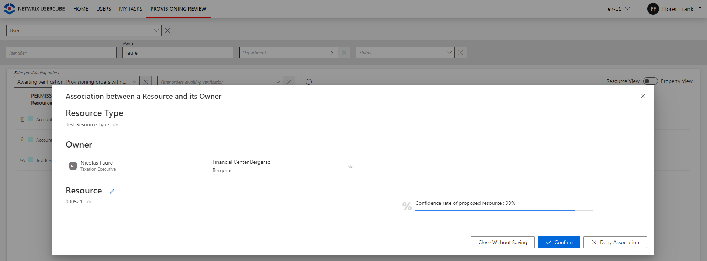
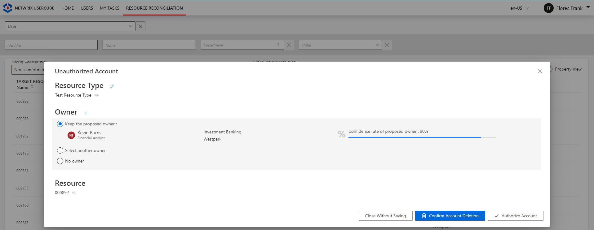
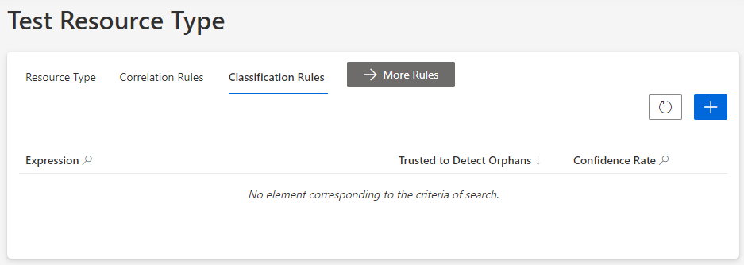
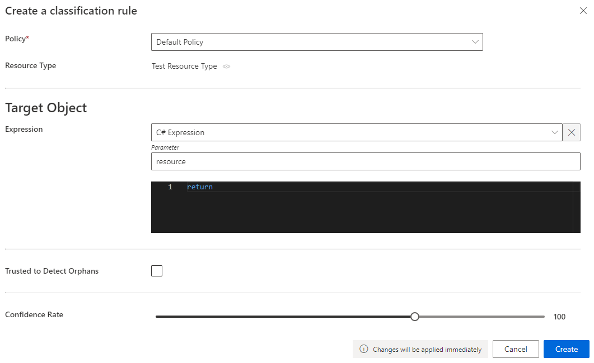
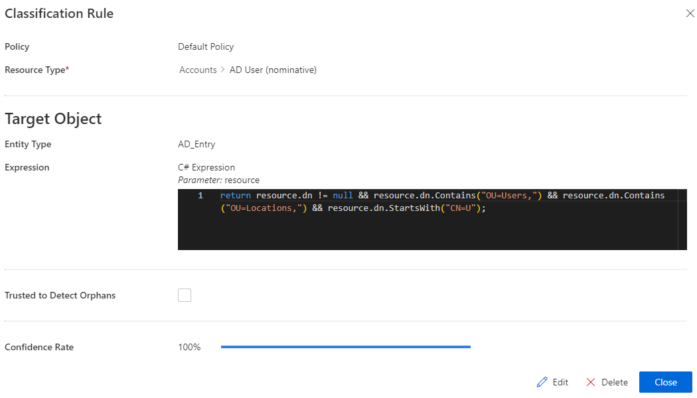
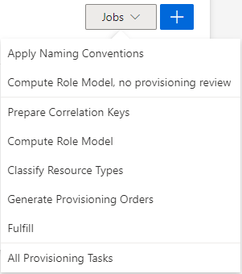
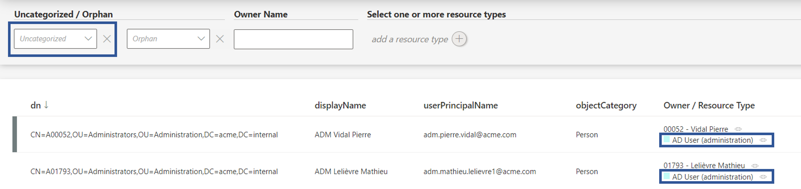
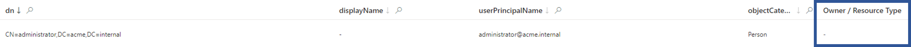

Classify Resources
How to define Resource Classification Rule in order to classify remaining uncorrelated resources, assigning them resource types. See the Create a Resource Type topic for additional information.
Overview
Classification purpose
Classification is the process of putting on an existing resource a label called resource type, to show its intent and/or purpose within the managed system. See the Entitlement Management topic for additional information.
Every resource type can be assigned a set of classification rules.
About the confidence rate
As the aim here is to classify uncorrelated resources in a given managed system, classification rules are going to rely on the patterns in resources' attributes, such as naming conventions.
Sometimes, the managed system doesn't use rigorous rules and thus data quality isn't enough to allow the creation of a single infallible correlation/classification rule for all resources. Hence, you may need to create several correlation/classification rules.
Each rule is configured with a confidence rate to express its reliability, according to data quality and sensitivity.
In our case, correlation/classification can be based on a first rule applicable to quality data resources with a high confidence rate, and a second rule applicable to resources with a lower data quality. This second rule is going to have a lower confidence rate, thus a lower priority, because the strategy is to apply the first rule as much as possible. But the second rule is essential in case the first one doesn't apply, though it cannot be trusted as much as the first rule.
Hence correlation/classification rules are configured with a confidence rate:
- from 100 to 150% to correlate resources automatically without a manual validation;
- from 0 to 99% to impose that a resource manager reviews the correlation/classification.
Identity Manager considers the rules in descending order of confidence rate. The first matching rule is applied.
In other words:
- if there is at least one matching rule with a confidence rate above 100%, then the one with the highest rate is applied;
- if there isn't and there is at least one matching rule with a confidence rate below 100%, then the one with the highest rate is suggested.
There is no predefined priority order between two rules with the same confidence rate.
Focus on reviews
When the confidence rate is below 100%, correlation and classification reviews are to be done:
-
on the Provisioning Review page when the owned resource is allowed by the role model, i.e. requested manually or assigned automatically by a resource type rule;

-
on the Resource Reconciliation page when the owned resource is not allowed by the role model, i.e. not requested manually nor assigned by a resource type rule. For example, the creation of a correlation rule without a resource type rule triggers unauthorized accounts on the Resource Reconciliation page.

Broadly speaking, the Resource Reconciliation page displays non-conforming assignments/values (gaps), i.e. resources and property values from the managed systems that are not allowed by a rule in Identity Manager. The Provisioning Review page displays the resource and property changes whose workflows require a manual approval.
Classification rule example
Classification rules are commonly based on logins or organizational units. Account types are usually assigned specific strings to be easily recognized, such as for example adm for administrator accounts. They can also include the employee identifier which includes specific digits according to the account type.
Consider an organization that places basic users in organizational units Users and Locations with a CN starting with U. This means that a basic user should have a dn attribute different from zero, containing OU=Users and OU=Locations, and starting with CN=U. Then, a classification rule could take as a target expression:
return resource.dn != null && resource.dn.Contains("OU=Users,") && resource.dn.Contains("OU=Locations,") && resource.dn.StartsWith("CN=U");
Participants and Artifacts
For a given managed system, integrators may need the help of the application owner who knows the application users, entitlements and data model.
| Input | Output |
|---|---|
|
Create a Resource Type
(required) Synchronize Data (required) Correlate Resources (recommended) |
Classification rules |
Create a Classification Rule
The principle of a classification rule is to use the expression of the target object, to assign (or not), the resource type to said object.
Fill a resource type with a classification rule by proceeding as follows:
-
On the relevant resource type's page, click on Classification Rules and the addition icon.

Classification rules can also be created through the Access Rules screen (accessible from the home page, in the Configuration section), clicking on the Classifications tab and the addition button at the top right corner.
-
Fill in the fields.

- Target Object >
Expression: C# expression based on the resource that needs to be classified. Confidence Rate: rate expressing the rule's reliability, and its priority order..
Our overview example would look like:

- Target Object >
-
Click on Create and see a line added on the rules page.
-
On the connector dashboard and in the Resource Types frame, click on Jobs > Classify Resource Types to apply the new classification rules.

Impact of Modifications
An action (addition/modification/deletion) on a classification rule doesn't trigger a new computation of classification for the resources that are already categorized, i.e. both classified and correlated. The new version of said classification rule will be applied only to new resources along with the existing resources whose correlation and/or classification was not yet reviewed (as unauthorized accounts on the Resource Reconciliation screen).
Thus only non-conforming resources (unauthorized accounts on the Resource Reconciliation screen) can have their correlation and classification re-computed.
Even without selecting an owner, reviewing unauthorized accounts on the Resource Reconciliation screen "blocks" correlation and classification "as is". Neither will be re-computed.
This also means that only non-conforming resources (displayed on the Resource Reconciliation screen) can have their classification questioned and re-computed.
Simulations are available in order to anticipate the changes induced by a creation/modification/deletion in classification rules. See the Perform a Simulation topic for additional information.
Any modification in classification rules is taken into account via the classification job: on the connector dashboard and in the Resource Types frame, click on Jobs > Classify Resource Types.
Verify Classification
In order to verify the process, analyze samples and check that all objects are classified, and well classified. To do so, click on the target entity type(s) affected by your rule(s) in the left menu of the home page.

The entity type's page can be configured via XML to customize all displayed columns and available filters, especially the Uncategorized filter that spots unclassified resources, and the Owner / Resource Type column that shows the resource type assigned to each resource.

Therefore, check that all resources show here a resource type. Moreover, a knowledgeable person must analyze a few samples to ensure that resources are classified in the right resource type.
Troubleshooting
If a resource is not classified (or not correctly), then:

- If the resource is correlated, check whether the corresponding correlation rule is in the right resource type.
- If the resource is not correlated, check the validity of the classification rules.
- Check the resource's data quality.